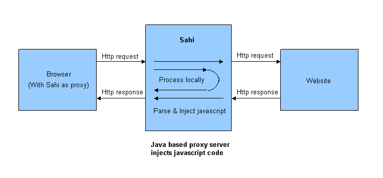

Sahi Pro - Architecture
Understanding Sahi's architecture needs an understanding of the design goals of Sahi.
User Goals
Testing software can be a tedious process.There is the creative exploratory part of it and the tedious, boring checking and rechecking part.
Sahi's goal is to enable good testers to reduce the tedious part. This brings in a few considerations:
- The tool should be simple to use
- It should minimize coding/scripting effort as much as possible
- It should take care of everything other than the business logic itself, like logging, reporting etc.
Sahi is focused towards saving time for testers and developers. Sahi has an excellent recorder which quickly
helps create snippets of script that can be executed as is or called from functions. Sahi takes care of reporting,
handling suites, distributed playback across multiple machines etc. with minimal effort from the tester.
helps create snippets of script that can be executed as is or called from functions. Sahi takes care of reporting,
handling suites, distributed playback across multiple machines etc. with minimal effort from the tester.
Technical Goals
Handling new browsers and operating systems
Testing web applications on browsers can be painful. There are a multitude of browserson different operating systems and each one has its own quirks. The tool should take care of these differences.
Browsers are also available on mobile devices, but mobile devices may not be able to install and run full testing tools.
So the tool should be:
- Browser and Operating System Independent
- Should be able to work on mobile browsers without installing full software
- Should be able to accommodate new browsers or new versions of browsers
without modification to script and minimal modification to tool.
Sahi uses a proxy to inject javascript into pages. The javascript enables record and playback functionality.
Configuring any browser to work with Sahi is as simple as pointing the browser's proxy to Sahi (localhost:9999)
Javascript and proxy support are critical to any browser and browsers make sure their proxy support and
javascript capabilities are bug free and backwards compatible. Because of this, Sahi is guaranteed to work with any browser.
Configuring any browser to work with Sahi is as simple as pointing the browser's proxy to Sahi (localhost:9999)
Javascript and proxy support are critical to any browser and browsers make sure their proxy support and
javascript capabilities are bug free and backwards compatible. Because of this, Sahi is guaranteed to work with any browser.
Object Identification
Existing methodogies of using ids, XPaths and CSS Selectors have proven to be woefully brittle and complex.When a test breaks, the first suspect is normally the script and its identification mechanism rather than the actual application.
This adds a lot of wastage into the testing cycle.
So the tool should:
- Identify elements in an easy way, and provide ways to automatically identify.
- Should not use any existing libraries like jquery since the web application may use similar libraries and cause a conflict
- Identifiers should relate to the user interface
- Identifiers should work across browsers
Sahi uses its own wrappers around the Javascript DOM to identify elements. Sahi APIs use various DOM attributes
of an element to identify them. For example, on a button, the attributes that Sahi may look for are value, name, id, css class,index etc.
Sahi also uses relation APIs like near, in, under, leftOf, rightOf etc. to identify one element with respect to another.
Sahi APIs are normalized to work across browsers.
of an element to identify them. For example, on a button, the attributes that Sahi may look for are value, name, id, css class,index etc.
Sahi also uses relation APIs like near, in, under, leftOf, rightOf etc. to identify one element with respect to another.
Sahi APIs are normalized to work across browsers.
Event simulation
- Event simulation should simulate the end user actions correctly across browsers.
- Should not need browser to be in focus, to allow parallel playback and reduce brittleness of tests
- Should not force users to do implicit actions like scrolling into view.
Sahi predominantly uses Javascript based events to simulate user actions. These work in 95% of cases.
In some very special cases, where Javascript events are ineffective, Sahi falls back on native events.
Sahi tries to keep native events to a minimum since the browser needs focus in these cases.
Needing focus leads to brittle tests and prevents parallel playback.
In some very special cases, where Javascript events are ineffective, Sahi falls back on native events.
Sahi tries to keep native events to a minimum since the browser needs focus in these cases.
Needing focus leads to brittle tests and prevents parallel playback.
Scripting
- Javascript is common to all web projects no matter what the back end technology may be.
Using javascript as the scripting language makes sure that expertise is always available in a web team.
- Logging etc. should be taken care of automatically
- Scripting should allow easy reuse of existing libraries to do non-browser tasks
Sahi Script, the default language used by Sahi, is an extension of Javascript. Sahi Script uses the same constructs of
Javascript, but adds capability to interact with the browser efficiently, and also perform system actions like read from file system,
access database, call Java etc.
Javascript, but adds capability to interact with the browser efficiently, and also perform system actions like read from file system,
access database, call Java etc.
Agile
- Scripts should be version controllable and "diff"able
- Scripts should break minimally when user interface changes
- Suites should allow being triggered from build and Continuous Integration systems
Sahi Scripts are plain text files which can be version controlled. Sahi's APIs are fairly robust
and can withstand peripheral UI changes. Sahi suites can be triggered from ant, batch files, shell scripts,
from java code or just as simple URL calls.
and can withstand peripheral UI changes. Sahi suites can be triggered from ant, batch files, shell scripts,
from java code or just as simple URL calls.
Architecture
Sahi uses a proxy to inject javascript into web pages.
The injected javascript
- adds event handlers for recording
- adds Sahi's APIs for event simulation
- mocks some window dialogs like alert, prompt, confirm, print so that playback is not affected